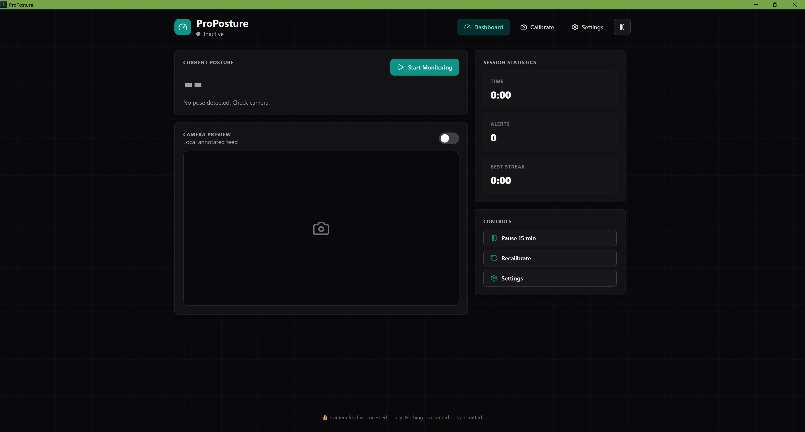
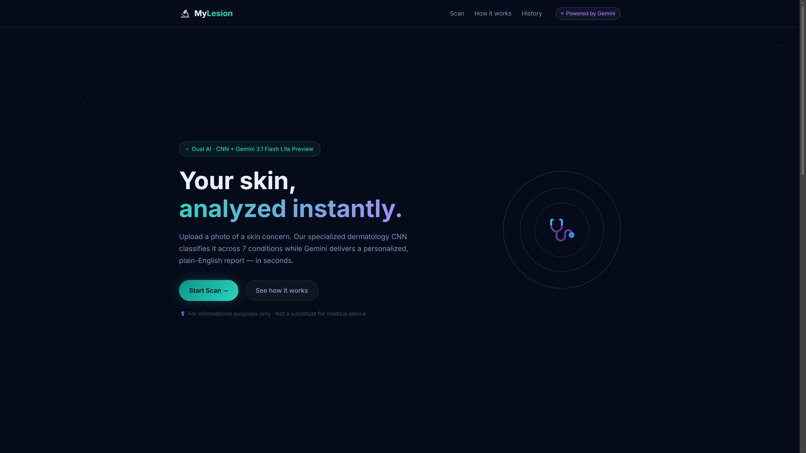
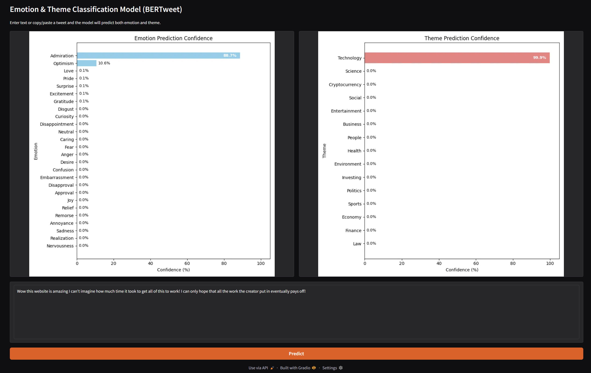

.jpg)
Education
Oregon State University
Expected June 2027Bachelor's in Computer Science, focus in AI | GPA: 3.95
Notable Classes: Machine Learning & Data Mining, Parallel Programming, Operating Systems, Algorithms, Software Engineering, Intro to Databases, Data Structures
Technical Skills & Tools
Languages:
- Python
- JavaScript
- HTML/CSS
- SQL
- C++
- C#
- C
- Assembly
- R
- Python
- JavaScript
- HTML/CSS
- SQL
- C++
- C#
- C
- Assembly
- R
- Python
- JavaScript
- HTML/CSS
- SQL
- C++
- C#
- C
- Assembly
- R
Tools:
- BERT
- React
- Node.js
- Linux SSH Servers
- MySQL
- GitHub
- VSCode
- Unity
- BERT
- React
- Node.js
- Linux SSH Servers
- MySQL
- GitHub
- VSCode
- Unity
- BERT
- React
- Node.js
- Linux SSH Servers
- MySQL
- GitHub
- VSCode
- Unity
Experience
Bonneville Power Administration - ASE Internship
June 2021 - August 2021Redesigned 30+ animations for technical training materials. Worked with professionals to make animations more accurately display information. Presented work for a symposium in order to teach other interns my development process.
Projects
ProPosture | Python, HTML, CSS, and JavaScript
2026
Built a local React and Python desktop application for real-time, privacy-focused posture monitoring. Integrated MediaPipe Pose to analyze live webcam feeds locally against user-calibrated baselines. Engineered a custom spoken voice coaching system using gTTS, VoxCPM2, and Gemini prompt optimization. Developed as a competitive entry for the 2026 AI for Good Hackathon, where our team secured 1st Place in the Computer Vision track. We worked under a strict deadline to architect the local CV pipeline and pitch the application's real-time ergonomic benefits to the judges.
MyLesion | Python and Javascript
2026
Built a full-stack dual-AI skin condition analyzer featuring FastAPI and a responsive drag-and-drop UI. Trained an EfficientNetB0 CNN on over 46,000 clinical images to accurately classify 7 distinct skin conditions. Integrated Gemini 3.1 Flash Lite to process model outputs and generate plain-English dermatology reports. Created alongside my team, TheDOMinators, as our submission for the Computer Vision track of the 2026 BeaverHacks Hackathon. This event challenged us to rapidly prototype and integrate our custom CNN with a generative AI API under extreme time constraints.
Social Media Stance Analysis | Python
2025
Currently collaborating with a team to analyze public opinion on gun control across Twitter posts using BERTweet . Implementing topic modeling with BERTweet to group tweets and identify the stances of opposing sides. Aiming to publish a paper presenting insights on the discussion of gun control on Twitter.
Emotion and Theme Classifiers | Python
2025
Trained two BERTweet models to predict main emotion and themes shown in inputted text based on Twitter data from late 2024. Built a web interface that allows users to interact with models. Models used and web app are stored on Hugging Face for easy access and deployment.
Software Engineering Final Project | HTML, CSS, JavaScript
2025
Built a recipe management website with React, using an Agile/Scrum framework. Developed and integrated three microservices to support user authentication and storage for recipes and ingredients. Allows users to manage recipes, while incorporating inclusivity heuristics for accessibility and usability.
Databases Final Project | SQL, HTML, CSS, JavaScript
2025
Built a website using Node.js that manages the sales of a fictional physical game store using a SQL database . Implemented CRUD operations for each of the six entities which includes a many-to-many relationship. Iteratively improved the project based on peer feedback from classmates, improving usability and database design.
Web Development Final Project | HTML, CSS, JavaScript
2025
Collaborated with a team of three to develop a multiplayer drawing game with Node.js inspired by Telestrations. Enabled real-time gameplay with Socket.io for lobby creation and passing prompts and drawings. My team’s project was inducted into the CS290 Hall of Fame for going above and beyond project guidelines.
Awards
First Place Winner - 2026 AI for Good Hackathon
May 2026Awarded 1st Place in the Computer Vision Track for developing ProPosture, a real-time, privacy-focused desktop posture monitoring application[cite: 1].
First Place Winner - OSU AI Club Project Competition
December 2025Awarded 1st Place at the OSU AI Club Project Competition, based on technical innovation and model performance.
CS290 Hall of Fame
December 2024Inducted into the CS290 Hall of Fame for going above and beyond project guidelines on a multiplayer Node.js drawing game[cite: 3].
OSU Honor Roll
September 2023 - PresentAchieved Honor Roll status every term for maintaining a GPA of 3.5 or higher throughout my time at OSU.
Finley Academic Excellence Scholarship
September 2023 - PresentI was awarded this scholarship for my academic achievements in my time at OSU. This scholarship represents the rigor of coursework I take to challenge myself and grow as an engineer.
Best Presentation
December 2023I received this award in a reverse engineering class, which reflects my passion for visual communication and organization.